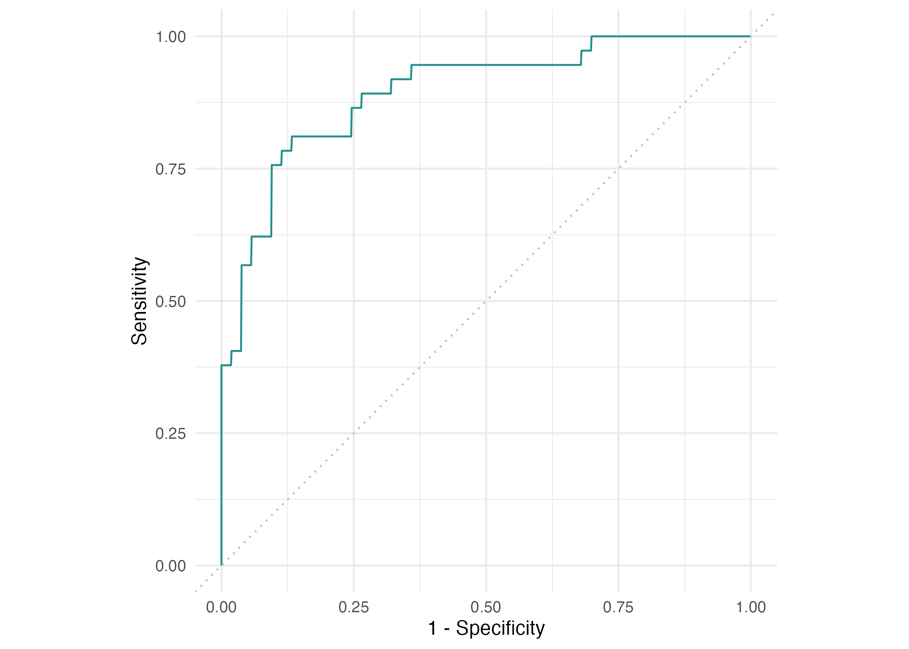
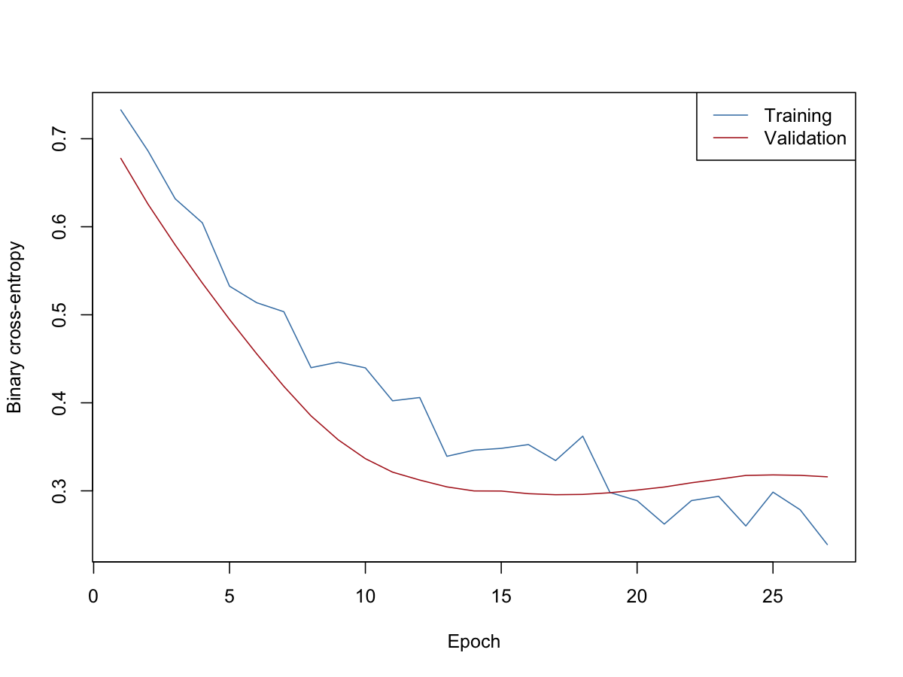

# Load the patient measurements and outcome labels.
source("R/01-data.R")Machine Learning in Epidemiology with R — Part 2
From random forest results to fitting a neural network
Slide presentation
Open the Part 2 presentation Download the PDF
The presentation follows this notebook, with 19 main slides and 10 optional appendix slides. Results shown are saved local workshop runs. Use the complete code blocks below for the hands-on exercises.
What will we learn?
Can clinical measurements help us distinguish patients with and without heart disease? We will first read the results of a random forest already fitted to these data. Then we will build a neural network and examine its predictions.
By the end, you should be able to explain a model’s mistakes, fit a neural network with Keras, and use mlr3 to evaluate its predictions.
Have the session guide ready before starting. It covers opening the project and installing Keras. The code below assumes your working folder is part2/. Run the code blocks in order in RStudio during the session. Saved results let us discuss the examples before fitting our own network.
1. Meet the heart data
Each row describes one patient. There are 270 patients and 13 measurements, including age, chest pain and cholesterol. The outcome, heart_disease, tells us whether heart disease is absent or present. We are classifying existing heart disease, rather than estimating future risk.
Load the prepared data. The data script gives the categories readable labels.
Count the patients in each outcome group:
table(heart$heart_disease)
absent present
150 120 There are 150 patients without heart disease and 120 with heart disease. A predictor is a measurement we use to help predict the outcome. The outcome itself must not be included among the predictors.
Discuss: Which measurements might help distinguish the two groups?
2. Read the random forest results
A random forest combines predictions from many decision trees. We have already fitted this model using 180 patients and tested it on the other 90. The test patients were kept out of training so we could assess predictions on unseen observations. We will use the saved results here, without fitting the forest again.
What did the model get right and wrong?
A confusion matrix counts correct predictions and mistakes. Read the rows as the model’s predictions and the columns as the patients’ recorded outcomes.
Read the saved confusion matrix
forest_confusion <- read.csv("outputs/confusion.csv")
forest_table <- xtabs(Freq ~ response + truth, data = forest_confusion)
knitr::kable(forest_table, caption = "Random forest: predictions for 90 test patients")| absent | present | |
|---|---|---|
| absent | 45 | 7 |
| present | 8 | 30 |
The model correctly identified 30 patients with heart disease and 45 without it. It missed 7 patients who had heart disease (false negatives) and raised 8 false alarms in patients without heart disease (false positives).
Discuss: What might a missed case mean for a patient? What might a false alarm lead to?
How well did it perform?
Accuracy is the proportion of all test patients classified correctly. Sensitivity is the proportion of patients with heart disease correctly identified. Specificity is the proportion without heart disease correctly identified.
Read the saved forest scores
forest_scores <- read.csv("outputs/holdout-measures.csv")
measure_ids <- c("classif.acc", "classif.tpr", "classif.tnr")
measure_labels <- c("Accuracy", "Sensitivity", "Specificity")
forest_values <- forest_scores$value[match(measure_ids, forest_scores$measure)]
knitr::kable(
data.frame(Measure = measure_labels, Percent = round(100 * forest_values, 1)),
caption = "Saved random forest results (%)"
)| Measure | Percent |
|---|---|
| Accuracy | 83.3 |
| Sensitivity | 81.1 |
| Specificity | 84.9 |
Accuracy is 83.3%: 75 correct predictions out of 90. Sensitivity is 81.1% and specificity is 84.9%. Looking at all three helps us see what accuracy alone can hide.
The forest predicts probabilities. A threshold is the probability at which we decide to classify a patient as having heart disease. Lowering the threshold usually catches more cases, but also raises more false alarms.

Discuss: Would you choose a threshold using accuracy alone?
3. Use mlr3 to organise the prediction task
We now ask the same question using a neural network. We keep the same training and test patients so the results can be compared.
mlr3 helps organise a prediction problem. A task records the data and the outcome we want to predict. Here, present is the positive class: the condition we want to detect. We load the saved split instead of drawing a new one.
library(mlr3)
# Tell mlr3 which outcome to predict and which class means disease is present.
heart_task <- as_task_classif(heart,
target = "heart_disease",
positive = "present",
id = "heart"
)
# Reuse the patients used to train and test the saved random forest.
split_record <- read.csv("outputs/split.csv")
split <- list(
train = split_record$row_id[split_record$subset == "train"],
test = split_record$row_id[split_record$subset == "test"]
)The training group contains 180 patients; the test group contains 90. Keep the test patients aside until the network has finished learning.
4. Prepare the inputs
Keras needs numerical inputs. We turn categories into numbers and indicator columns. An indicator is a column containing 0 or 1 to show whether a category applies. This gives us 22 input columns from the original 13 predictors.
We also scale numerical measurements so differences in units, such as age and cholesterol, do not dominate the learning process. Scaling is learned from the fitting rows only, keeping validation and test patients out of that step.
Show input preparation
# Exclude the outcome from the inputs. Keras needs numbers, so use 0/1 for
# binary categories and indicator columns for the others. An indicator is 1
# when a category applies and 0 otherwise. Together these give 22 inputs.
x_data <- heart[, setdiff(names(heart), "heart_disease")]
for (nm in c("sex", "fasting_blood_sugar", "exercise_induced_angina")) {
x_data[[nm]] <- as.integer(x_data[[nm]]) - 1L
}
nominal <- names(x_data)[vapply(x_data, is.factor, logical(1))]
contrasts_full <- lapply(x_data[nominal], function(x) contrasts(x, contrasts = FALSE))
x <- model.matrix(~ . - 1, data = x_data, contrasts.arg = contrasts_full)
stopifnot(ncol(x) == 22L, all(is.finite(x)))
# Keras reserves the last 20% of training rows for validation.
# Calculate scaling from the other 80% only, keeping validation and test
# patients out of this calculation.
inner_n <- floor(length(split$train) * 0.8)
fit_rows <- split$train[seq_len(inner_n)]
continuous <- names(x_data)[vapply(x_data, is.numeric, logical(1))]
continuous <- setdiff(
continuous,
c("sex", "fasting_blood_sugar", "exercise_induced_angina")
)
# Subtract each measurement's mean and divide by its standard deviation.
# This puts measurements with different units on a comparable scale.
centre <- colMeans(x[fit_rows, continuous, drop = FALSE])
spread <- apply(x[fit_rows, continuous, drop = FALSE], 2, sd)
stopifnot(all(spread > 0))
x[, continuous] <- sweep(
sweep(x[, continuous, drop = FALSE], 2, centre),
2, spread, "/"
)
# Code the outcome as 1 for present and 0 for absent.
y <- as.integer(heart$heart_disease == "present")Check the number of input columns and the outcome coding:
ncol(x)
table(y)The outcome is coded as 1 for heart disease and 0 for its absence.
5. Build the network with Keras
Keras defines and trains the neural network. We use it directly here, then bring its predictions into mlr3 for evaluation.
Think of the network as a sequence:
Patient measurements → hidden layers → probability of heart disease
A hidden layer combines inputs into patterns that the network learns. The final layer returns one probability between 0 and 1. The two hidden layers below contain 64 and 32 units. Dropout temporarily switches off some units during training to help limit overfitting: learning the training examples too closely to work well on new patients.
library(keras3)
# Fix the random starting point for the network.
set_random_seed(20261023)
# Pass 22 inputs through two hidden layers to one output probability.
# Dropout temporarily switches off some units during training to limit overfitting.
network <- keras_model_sequential(input_shape = c(22)) |>
layer_dense(units = 64, activation = "relu") |>
layer_dropout(rate = 0.4) |>
layer_dense(units = 32, activation = "relu") |>
layer_dropout(rate = 0.4) |>
layer_dense(units = 1, activation = "sigmoid")
# Choose how to update the weights and measure prediction error.
# Binary cross-entropy is a loss for a two-class outcome.
compile(network,
optimizer = optimizer_adam(learning_rate = 0.002),
loss = "binary_crossentropy", metrics = "accuracy"
)compile() sets how the network learns. The optimiser updates its weights (the values controlling its connections). The loss measures prediction error; binary cross-entropy is used for this two-class outcome.
6. Fit the network and watch it learn
An epoch is one pass through the fitting data. A batch is a smaller group processed before updating the weights.
We reserve 20% of the training group for validation: checking progress during learning. The network updates its weights using 144 patients and monitors its progress on 36 validation patients. These are separate from the 90 test patients. Early stopping ends training if validation loss stops improving.
# An epoch is one pass through the fitting rows; batches contain 32 rows.
# Monitor validation loss and stop after 10 epochs without improvement,
# restoring the weights from the best validation epoch.
training <- fit(
network,
x[split$train, ],
y[split$train],
epochs = 50,
batch_size = 32,
validation_split = 0.2,
verbose = 1,
callbacks = list(callback_early_stopping(patience = 10, restore_best_weights = TRUE))
)Plot the history from your own run:
# Compare training and validation loss as learning progresses.
plot(training)Look for training and validation loss in this plot. The figure below comes from the saved workshop run; your run may produce a different curve.

If training loss keeps falling while validation loss rises, the network may be overfitting.
Discuss: Why do we need validation patients as well as training patients?
7. Evaluate the network and compare results
Use the trained network to predict probabilities for the 90 test patients. For this example, classify a probability of 0.5 or more as present.
PredictionClassif$new() puts the Keras predictions into an mlr3 prediction object. It stores the observed outcomes, predicted classes and probabilities. We can then request the same measures used for the forest.
# Predict unseen test patients. Use 0.5 as the cut-off for a present prediction.
prob <- as.numeric(predict(network, x[split$test, ], verbose = 0))
class <- ifelse(prob >= 0.5, "present", "absent")
accuracy <- mean(class == as.character(heart$heart_disease[split$test]))
accuracy
# Bring the Keras predictions into mlr3 for the same evaluation measures.
network_pred <- PredictionClassif$new(
task = heart_task,
row_ids = split$test,
truth = heart_task$truth(rows = split$test),
response = class,
prob = cbind(present = prob, absent = 1 - prob)
)
network_pred$confusion
network_pred$score(msrs(c("classif.acc", "classif.tpr", "classif.tnr")))What happened in the saved run?
The next table uses the saved network predictions, rather than fitting a new network when the page opens.
Compare the saved results
saved_network <- read.csv("outputs/neural-predictions.csv")
stopifnot(
identical(saved_network$row_id, split$test),
identical(saved_network$truth, as.character(heart$heart_disease[split$test]))
)
saved_prediction <- PredictionClassif$new(
task = heart_task,
row_ids = saved_network$row_id,
truth = heart_task$truth(rows = saved_network$row_id),
response = saved_network$prediction,
prob = cbind(
present = saved_network$probability_present,
absent = 1 - saved_network$probability_present
)
)
network_values <- unname(saved_prediction$score(msrs(measure_ids)))
knitr::kable(
data.frame(
Measure = measure_labels,
`Random forest (%)` = round(100 * forest_values, 1),
`Neural network (%)` = round(100 * network_values, 1),
check.names = FALSE
),
caption = "Saved results for the same 90 test patients"
)| Measure | Random forest (%) | Neural network (%) |
|---|---|---|
| Accuracy | 83.3 | 85.6 |
| Sensitivity | 81.1 | 78.4 |
| Specificity | 84.9 | 90.6 |
The saved network classified 77 of the 90 test patients correctly, compared with 75 for the forest. That small difference in one split does not establish that neural networks are generally better. Compare the types of mistakes as well as the overall accuracy. After your own run, use network_pred above to inspect your results; this saved comparison table remains a reference.
Discuss: Which model missed fewer cases? Is the difference large enough to change your conclusion?
Where to go next
The main session ends here. Choose an extension when you want to explore a specific question further:
| Question | Follow-up material |
|---|---|
| How does a single tree work, and why simplify it? | Trees and pruning |
| Would another training sample give different results? | Resampling in the same script |
| Can different model settings improve predictions? | Tuning |
| Which measurements influence predictions? | Discuss feature importance and effects; predictive importance does not establish causation. |
| Can we create artificial records resembling these patients? | Synthetic data: generate the records, then compare age summaries and outcome proportions with heart. |
These scripts run separately. The tree/evaluation script also refits the random forest; it is not needed for the main session.
Sources and further details
The examples draw on Wright et al. (2026). Exact model settings and implementation choices are in the replication record; data preparation is in the data guide. Saved results describe the recorded workshop runs and may differ from a new run.
For the tools, see the mlr3 prediction documentation and the Keras training guide.